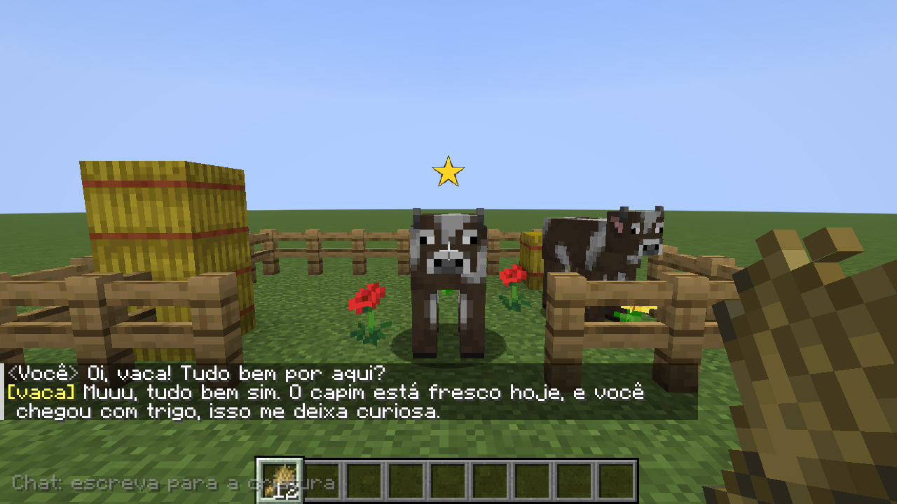

Fale de verdade
Mire numa criatura (uma estrela marca com quem você fala) e fale. A sua fala vira texto no seu PC e a resposta sai por voz, vinda dela (Simple Voice Chat).
testado em jogo (voz sintética)microfone real: sem testeMOD PARA MINECRAFT JAVA 1.21.8 · FABRIC
Aponte para uma vaca, um aldeão ou até um Warden, fale no microfone e ouça a resposta, em português, vinda do próprio mob. Eles lembram de você, trocam itens, seguem ordens e conversam entre si.

VEJA FUNCIONANDO
Estes prints saem de testes automáticos que rodam o jogo de verdade: um jogador digita (o mesmo caminho do modo chat) e as criaturas respondem com a IA, em voz e legenda. Na vida real você fala no microfone.
Cada criatura tem tom e velocidade próprios. Estes áudios foram gerados no próprio PC, com a voz Kokoro.
TUDO QUE O MOD FAZ
Não é um chatbot colado no jogo: o que a criatura diz tem consequência de verdade, e o que ela decide fazer, ela faz.
testado em jogo funciona nos testes automáticos dentro do Minecraft sem teste humano ninguém jogou isso ainda desligado por padrão o dono do mundo liga
Mire numa criatura (uma estrela marca com quem você fala) e fale. A sua fala vira texto no seu PC e a resposta sai por voz, vinda dela (Simple Voice Chat).
testado em jogo (voz sintética)microfone real: sem testeCada criatura lembra o que viveu com você: presentes, trocas, golpes, consolo. O que o servidor viu (fato) fica separado do que você só disse (alegação).
testado em jogosobrevive a salvar e sair“Me segue”, “fica aqui”, “não entra no portal”, “me defende”, “não explode perto de mim”. Elas obedecem de verdade, ou recusam se não confiam. Quem fica para trás se teletransporta com segurança. Até 15 aliados por padrão.
testado em jogoPeça algo e jogue os itens no chão perto dela: ela diz o que aceita, devolve a sobra e entrega. Dá para barganhar e convencer com bons motivos. O preço varia com a confiança e o humor. São 130 receitas em 46 criaturas e profissões.
testado em jogonúmeros a ajustar jogandoCavalos, lobos, gatos e outros se deixam domar se confiarem em você, com dono de verdade: cavalo montável, lobo e gato seus.
testado em jogoVocê pode mentir (“eu sou seu pai!”) e a criatura decide se acredita, conforme a personalidade. Ameaçar assusta, consolar acalma, devolver algo sem ser pedido conta como honestidade e é lembrado.
testado em jogoAmeace um porco e ele foge de verdade; um zumbi avança; o Warden, que é cego, nem se abala. 66 criaturas têm origem, sentidos e medos próprios (pesquisados no wiki).
testado em jogoWarden e Wither seguem, guardam e defendem; o Dragão do Fim faz trégua. Só pactuam com muita confiança, traem quem os fere e não destroem blocos enquanto estiverem sob contrato.
testado em jogodesligado por padrãoDragão só no OverworldPerto de você, aldeões falam com aldeões, vacas com vacas, zumbis com zumbis, sobre o tempo, a vila e sobre você. Cada tipo de mob só conversa com quem faz sentido (vaca nunca fala de “trocar”). Falas prontas: não gastam IA.
testado em jogofrequência e assuntos: palpitesO que você segura e veste vira assunto: a vaca vê o trigo e pergunta se é para ela, aldeões comentam a sua armadura, cada mob quer o que combina com ele.
testado em jogoAté saber o seu nome, você é “Humano”. Quando você diz (ou responde a uma pergunta de nome), só aquela criatura aprende. As outras só ficam sabendo por fofoca entre elas.
testado em jogoSem microfone? Digite /mobvoz chat sim e escreva no chat com a criatura na mira. A resposta vem como legenda (e em voz).
IA local gratuita (Ollama) ou a sua própria API (como a DeepSeek). Voz principal Kokoro (mais natural) ou Piper (modo leve, bem mais rápido para gerar).
testado em jogoO áudio nunca sai do seu PC e não é gravado. Nada de jogador vai para arquivo de log. Só o texto vai à API, e só se você escolher usar uma. Sem seu consentimento (/mobvoz voz sim) o microfone não é usado.
Consentimento por jogador, checado no servidor. Testado num servidor dedicado com 1 jogador conectado.
1 jogador testado2+ jogadores: sem testePOR DENTRO
A regra de ouro: a IA só sugere; quem decide e executa é o servidor do jogo. Por isso uma criatura nunca “inventa” que te deu um item nem ganha poderes que não tem.
O mod (jar) é minúsculo (cerca de 300 KB). O peso está num serviço de IA separado, o “sidecar”, que escuta só em 127.0.0.1: reconhecimento de fala, voz e (se você quiser) o modelo de linguagem local.
O que o servidor viu é fato e não pode ser reescrito. O que você disse é só alegação: a criatura pode acreditar, duvidar ou rir, mas isso nunca vira fato.
Nada de console, /give ou código vindo da IA. Ela devolve um JSON estrito; o servidor só executa o que está numa lista permitida e passa pelas regras de economia.
DO ZERO, NUM PC LIMPO
Feito para um computador onde nada está instalado. Marque cada passo como feito (fica salvo no seu navegador). Cada passo diz o que você deve ver quando deu certo.
| O quê | Versão usada nos testes |
|---|---|
| Minecraft Java | 1.21.8 |
| Fabric Loader | 0.17.3 ou mais novo |
| Fabric API | 0.136.1+1.21.8 |
| Simple Voice Chat | 2.6.27 (para Fabric 1.21.8) |
| MobVoz IA | 0.1.0 (Alpha) |
| Python | 3.10 ou mais novo (testado com 3.14) |
| Ollama (só se usar IA local) | modelo qwen3:4b |
Instale o launcher oficial em minecraft.net/download e entre com a sua conta. Crie uma instalação da versão 1.21.8 (Instalações > Nova instalação > Versão 1.21.8), jogue uma vez até o menu e feche. Isso baixa os arquivos do jogo.
O jogo abre no menu principal da 1.21.8.
O launcher já traz o Java 21 dentro dele. Você só precisaria instalar o Java à parte se o instalador do Fabric reclamar (aí use o Temurin 21 em adoptium.net).
Baixe o instalador (arquivo .exe) em fabricmc.net/use/installer. Na aba Client, deixe Minecraft version: 1.21.8, o Loader mais novo, e clique Install.
“Fabric successfully installed”. No launcher aparece a instalação fabric-loader-1.21.8.
Assim você não mistura nada com o seu Minecraft normal. Crie a pasta C:\MobVozJogo. No launcher: Instalações > fabric-loader-1.21.8 > Editar > Mais opções > Diretório do jogo = C:\MobVozJogo > Salvar.
A instalação mostra o caminho C:\MobVozJogo.
Clique no botão e salve o arquivo (cerca de 0,5 MB). Depois extraia em C:\MobVozIA (clique direito > Extrair tudo).
⬇ Baixar MobVozIA 0.1.0 (Alpha)
O pacote traz o mod, o serviço de IA e a documentação. O Simple Voice Chat, o Fabric API e os modelos de voz e de IA são baixados por você nos passos seguintes (as licenças deles não deixam redistribuir).
Dentro de C:\MobVozIA existem as pastas mod (com mobvoz-0.1.0.jar), ai-service e docs.
modsCrie C:\MobVozJogo\mods e coloque lá 3 arquivos:
mobvoz-0.1.0.jar (de C:\MobVozIA\mod);0.136.1+1.21.8: modrinth.com/mod/fabric-api;O Simple Voice Chat tem licença que não deixa redistribuir o arquivo: por isso você baixa direto do site dele.
Na pasta mods: três arquivos .jar.
Baixe em python.org/downloads. Na primeira tela do instalador, marque “Add python.exe to PATH” e instale. Depois abra o PowerShell (menu Iniciar) e confira:
python --version
Algo como Python 3.14.3 (qualquer 3.10 ou mais novo serve).
No PowerShell:
cd C:\MobVozIA\ai-service powershell -ExecutionPolicy Bypass -File .\instalar-sidecar.ps1
Ele cria o ambiente, instala as bibliotecas e baixa as vozes e o modelo de reconhecimento de fala (uns 1,2 GB; leva alguns minutos). Para um PC fraco, rode com -Leve no fim (instala só a voz Piper).
As etapas passam em verde e termina com “Pronto!”.
Melhor qualidade e não pesa no PC. Crie uma chave de API na DeepSeek (platform.deepseek.com, menu “API keys”; precisa de crédito na conta). Cada teste completo que fizemos com centenas de chamadas custou uma fração de dólar. A chave é sua: nunca a compartilhe. Depois:
cd C:\MobVozIA\ai-service powershell -ExecutionPolicy Bypass -File .\configurar-api.ps1
Cole a chave quando pedir (o texto não aparece). Para ligar o serviço, dê dois cliques em run-sidecar-api.bat.
Só o texto das conversas vai à API. A voz e o seu áudio ficam no PC. Outras APIs compatíveis com a da OpenAI também funcionam (variáveis MOBVOZ_API_URL e MOBVOZ_API_MODEL).
De graça e offline, mas mais pesado e menos esperto. Instale o Ollama e baixe o modelo (cerca de 2,6 GB):
ollama pull qwen3:4b
Para ligar o serviço, dê dois cliques em run-sidecar.bat. Numa placa de vídeo pequena ou sem placa, a resposta demora mais (use llama3.2 se quiser algo mais leve: variável MOBVOZ_MODEL).
O modelo local erra mais o português e às vezes se contradiz. Para a melhor experiência, use a opção A.
Com o serviço ligado, abra http://127.0.0.1:8765/health no navegador: aparece "status": "ok" e "tts": "kokoro".
O run-sidecar-api.bat (ou run-sidecar.bat) abre uma janela preta: deixe-a aberta enquanto joga. A primeira fala demora uns 10 a 15 segundos (carrega os modelos); depois fica rápido.
A janela mostra “MobVoz sidecar em http://127.0.0.1:8765” e, depois de alguns segundos, “aquecimento concluído”.
No launcher, escolha a instalação fabric-loader-1.21.8 e clique Jogar. Crie um mundo Criativo para testar (assim você pode usar comandos e invocar mobs).
O mundo abre sem erro. No chat, ao digitar /mobvoz, o jogo sugere os comandos.
Dentro do mundo, aperte V (Simple Voice Chat). Escolha o microfone e use ativação por voz (se deixar “aperte para falar”, o mod só ouve enquanto você segura a tecla). Faça o teste de microfone da própria tela.
A barra de volume do microfone mexe quando você fala.
No chat do jogo:
/mobvoz voz sim /mobvoz status
Sem isso nada do seu microfone é usado. /mobvoz status mostra se o serviço de IA está ligado.
O status mostra o serviço de IA online.
Invoque uma vaca na sua frente e mire nela:
/summon cow ~ ~ ~3
Uma estrela amarela aparece sobre ela. Fale: “Oi, vaca! Tudo bem por aqui?” e espere a resposta (voz + legenda). Sem microfone? Digite /mobvoz chat sim e escreva no chat.
A vaca responde em voz alta e a legenda aparece no chat, em amarelo.
DENTRO DO MINECRAFT
/mobvoz voz sim | Dá o consentimento para usar o microfone (nao desliga; status mostra). |
/mobvoz chat sim | Modo chat: o que você escreve vai só para a criatura na mira (nao desliga). |
/mobvoz falar <texto> | Manda uma mensagem à criatura na mira (qualquer modo). |
/mobvoz legenda sim | Mostra legendas também para quem usa voz. |
/mobvoz status | Estado do serviço de IA e tempos de resposta. |
/mobvoz diag falar <texto> | Testa a IA por texto (diagnóstico). |
Fale livre, como com uma pessoa. Alguns exemplos que funcionam:
config/mobvoz/server.json| Chave | O que faz (padrão) |
|---|---|
preset | low | balanced | high: mexe só na carga (o low desliga as conversas ambiente). |
voiceEngine | auto (padrão), kokoro ou piper (modo leve). |
ambientChatter | Conversas entre criaturas (ligado). ambientCooldownSeconds: intervalo na mesma região (60). |
maxActiveFollowersPerPlayer | Aliados por jogador (15; máximo 32). |
bossContractsEnabled | Liga pactos com Warden, Wither e Dragão (desligado). |
bossDestructionOnAlliance | Se false (padrão), chefe sob contrato não quebra blocos. |
requireVoiceConsent | Exige /mobvoz voz sim (ligado). |
dynamicPrices, naturalEvents | Preço variável nas trocas e falas espontâneas dos aliados (ligados). |
ESCOLHA O SEU CAMINHO
O mod funciona com os dois. O que muda é a qualidade da conversa e o peso no seu PC.
| Sua própria API (ex.: DeepSeek) | Modelo local (Ollama) | |
|---|---|---|
| Qualidade da conversa | Muito melhor: português natural e fiel aos fatos. | Menor: erra português, às vezes se contradiz e inventa desculpas. |
| Custo | Muito barato, na sua conta: uma bateria inteira de testes nossa, com centenas de chamadas, custou uma fração de dólar. | Grátis. |
| Peso no PC | Quase nenhum. | Cerca de 2,6 GB de disco e 3,7 GB de placa de vídeo (testado numa GTX 1660 SUPER). |
| Internet | Precisa. | Não precisa (depois de baixar). |
| O que sai do PC | O texto das conversas. Nunca o áudio. | Nada. |
| Como ligar | configurar-api.ps1 e run-sidecar-api.bat | run-sidecar.bat |
Kokoro (padrão) é muito mais natural e nítido; leva cerca de 1,5 s para gerar uma fala no processador. Piper é o modo leve: ~0,25 s por fala. Escolha com "voiceEngine" no server.json ou com a variável MOBVOZ_TTS=piper. Se faltar o Kokoro, o serviço usa o Piper sozinho.
instalar-sidecar.ps1 -Leve."preset": "low" e "ambientChatter": false no server.json.MOBVOZ_STT_MODEL=base (ou tiny).MOBVOZ_MODEL=llama3.2.MOBVOZ_PROVIDER (ollama ou api), MOBVOZ_MODEL, MOBVOZ_TTS, MOBVOZ_STT_MODEL, MOBVOZ_STT_DEVICE, MOBVOZ_API_URL, MOBVOZ_API_MODEL, MOBVOZ_PORT, MOBVOZ_TOKEN. A chave da API vem de %USERPROFILE%\.mobvoz\api.json.
SE ALGO DER ERRADO
run-sidecar-api.bat (ou run-sidecar.bat) e deixe a janela aberta. Confira em /mobvoz status e em 127.0.0.1:8765/health. O jogo continua normal sem ele./mobvoz voz sim uma vez. Se ainda assim nada, use o modo chat (/mobvoz chat sim) para ver se o problema é só o microfone.small (no processador). Se tiver um PC forte, MOBVOZ_STT_MODEL=medium acerta mais.voiceEngine: "piper") ou feche outros programas que usem a placa de vídeo.powershell -ExecutionPolicy Bypass -File .\nome-do-script.ps1, como nos passos acima./mobvozC:\MobVozJogo\mods) tem os 3 arquivos e se você abriu a instalação fabric-loader-1.21.8. A versão do Fabric API precisa ser a da 1.21.8.C:\MobVozJogo\logs\latest.log (ele não guarda áudio nem o que você falou).SEM ENROLAÇÃO
Encontrou um bug ou uma resposta esquisita? É exatamente o que esta fase Alpha quer descobrir. Conte ao autor o que você disse, qual criatura era e o que aconteceu.